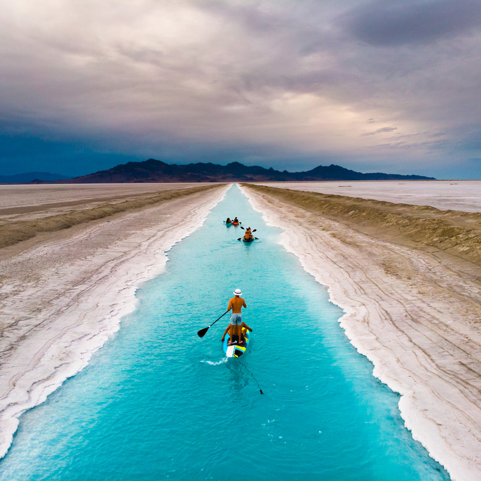

Salt flats in Utah, particularly the Bonneville Salt Flats, are one of the most unique and stunning natural features in the United States. Covering over 30,000 acres, these vast, flat expanses of hard, white salt crust are remnants of the ancient Lake Bonneville that once covered much of the region during the last Ice Age. Located near the Nevada border, about 100 miles west of Salt Lake City, the Bonneville Salt Flats are renowned for their otherworldly landscape and mirror-like surface after rain, creating a striking visual effect. This area is also famous for land speed records, with its perfectly flat surface providing an ideal track for high-speed vehicles. Visitors to the salt flats can experience the surreal beauty of this natural wonder, whether by driving across its surface, attending one of the speed events, or simply marveling at the vast, open space that stretches to the horizon. The salt flats are not only a geological marvel but also a symbol of the extreme environments that can be found in Utah's diverse landscape.
